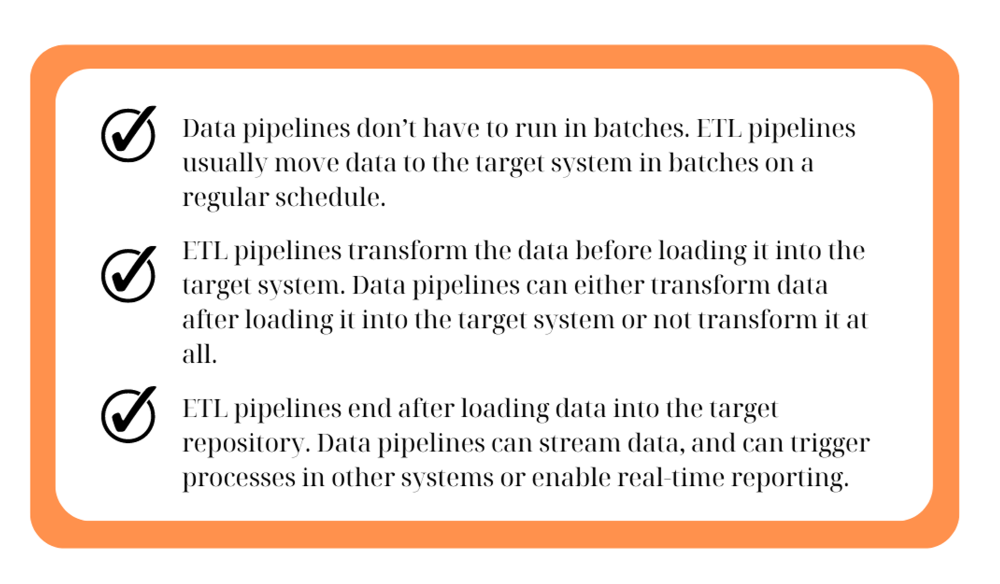
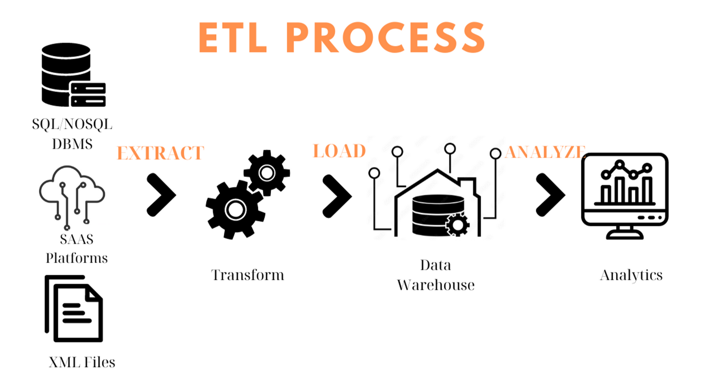
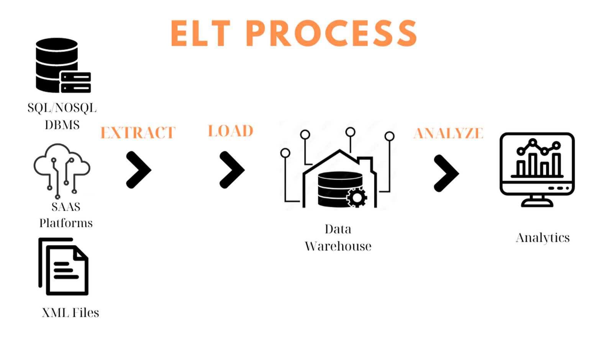

A data pipeline is a series of data preprocessing steps where data is extracted from one or more sources, transformed into a format suitable for analysis and finally stored in a data lake or a data warehouse for further use. Data pipelines can manage not just the process data but also preserve the quality and accessibility of data.
Data pipelines consist of three essential elements:
1) A source or sources, data from multiple sources is first gathered and moved into a pipeline.
2) Processing steps, the raw data (structured or not) is then processed and transformed to align with the desired output.
3) A destination, the output is stored in a data lake or cloud data warehouse, ready for analytics.
ETL is an acronym for “Extract, Transform, and Load” and describes the three stages of the process. ETL pipeline is a term that if you are searching about pipelines you will definitely see it somewhere. It should not be used synonymously with the term data pipeline. Data pipeline is a broad category used to move data between systems, on the other hand ETL is a specific type of data pipeline. The ETL process is most appropriate for small data sets which require complex transformations. For larger data sets and when timeliness is important, the ELT (“Extract,, Load, and Transform”) process is more appropriate. Below are three key differences between the two to have a more clear view about the alteration of those two terms.
Data pipelines can broadly be classified into two types based on their operation: batch processing and streaming data pipelines.
It involves collecting data over a specific period then processing it in bulk. Traditional batch processing where data is periodically extracted, transformed and loaded to a target system is sufficient.
Streaming data pipelines hadle real-time data, processing new data points as they arrive. They are used when analytics requires continually flowing and updating data. Instead of loading data in batches, streaming pipelines move data continuously in real-time from source to target. It is more often used with unstructured data sets and when timeliness is important.
AWS data pipeline is a web service that it is offered by Amazon Web Service (AWS). This service allows you to easily move and transform data within the AWS ecosystem, such as archiving Web server logs to Amazon S3 or generating traffic reports by running a weekly Amazon EMR cluster over those logs.
created with
Website Builder Software .